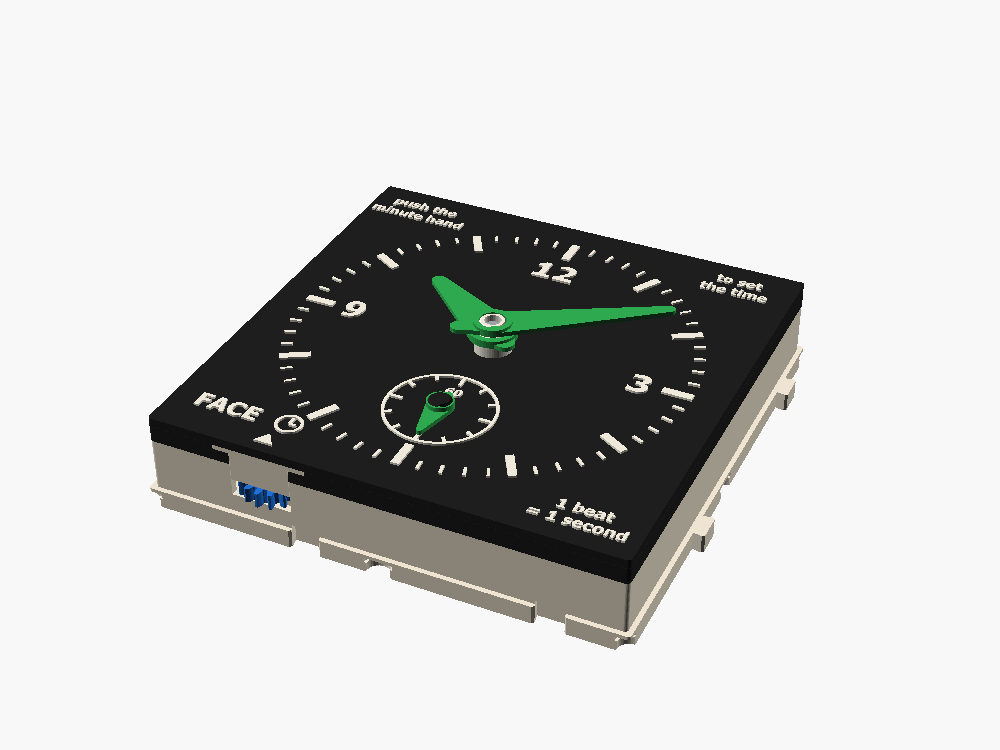
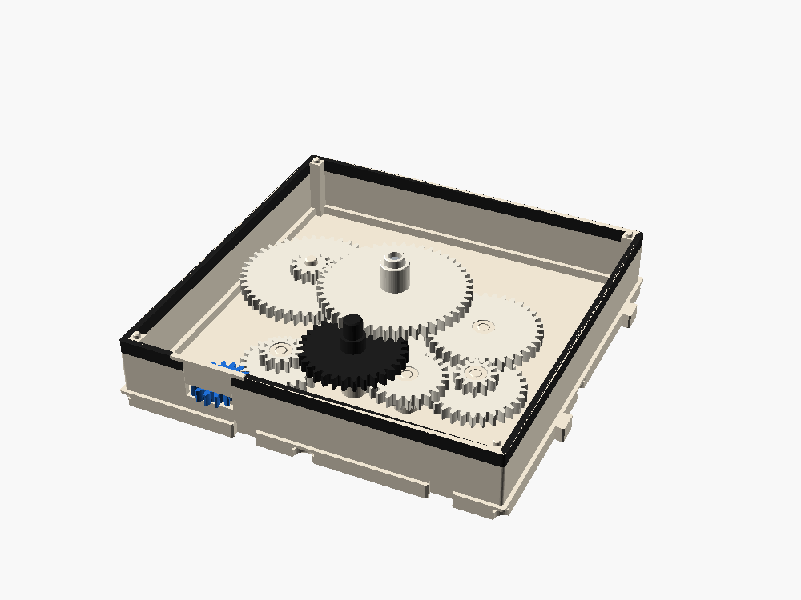
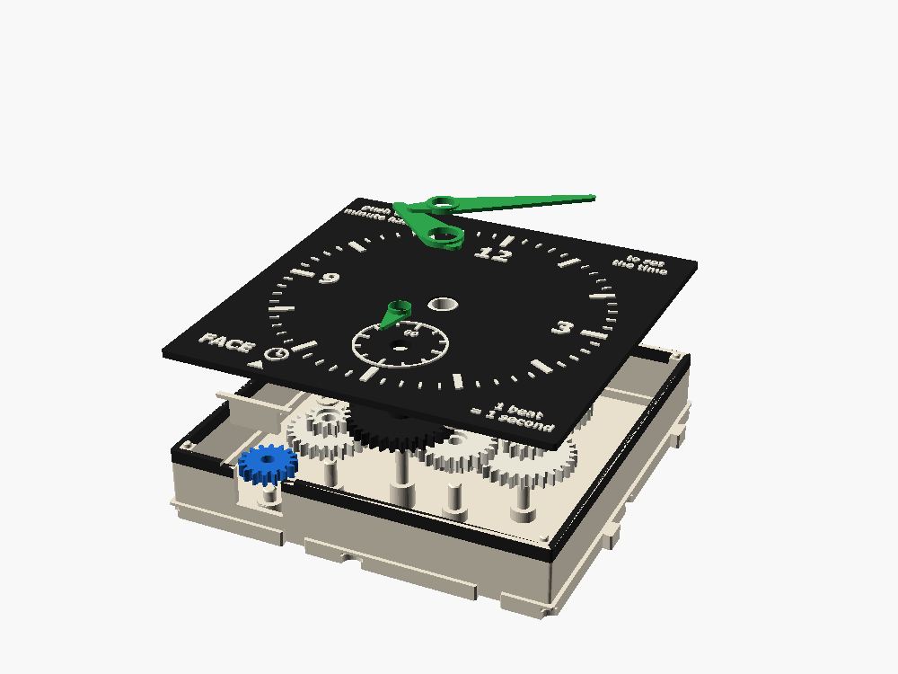

An hour hand, a minute hand and a small seconds dial, on the line a TICK regulates. One beat of the foliot is one second. Inside, gears divide by 60, by 60 again and by 12, exactly as a clock's do.
It keeps time as well as its foliot does, which is not very well. That's the lesson: a clock is a counter, and all its error lives in the thing it counts.

Wind the spring and let it go. Every tick of the foliot moves the seconds hand 6°. Watch how long one wind lasts, and whether the face keeps up with a real stopwatch.
An illustration, not a measurement: the beat is set at one a second for the middle pocket, and a foliot is modeled to swing faster in proportion to the square root of its push. The real numbers come from the first print.
| Part of every clock | In a church clock, 1350 | In a quartz watch | Here |
|---|---|---|---|
| Power | a falling weight | a battery | SPRING |
| Oscillator, which sets the rate | a foliot | a quartz crystal, 32,768 Hz | TICK's foliot and its balls |
| Escapement, which lets power through one beat at a time | a verge | a driver chip and a stepper | TICK's pallets |
| Counter, which turns beats into hours | wheels and a dial | a chip that halves 15 times, then gears | FACE |
FACE can't miscount: sixty beats always make one turn of the seconds hand, because gears don't skip. If the clock is wrong, the beats were wrong.
TICK lets its line through one escape-wheel tooth per beat: 24° of a 16-tooth port. FACE's port is 16 teeth too. From there:


The motion works alone needs its two gear pairs 30 mm apart, with 45- and 48-tooth wheels: wider than one cell. A two-cell box holds that but not the 60:1 as well. A layout search over every gear choice and position found no way to fit both in 55 mm of width on four layers. At 2×2 everything sits on the standard four layers, and the dial is 108 mm across, readable from across a table.
The center wheel, which turns once an hour, doesn't drive the minute tube directly. Three springy fingers round its bore grip the tube. That's enough to carry the hands and the motion works, which need almost nothing. Push the minute hand and the fingers slip: the train behind can't be driven backwards through 1:60 of gearing, TICK's pallets and SPRING's plunger. The hour hand follows through the motion works. Real clocks use the same trick, a friction-fit cannon pinion.
A full wind of SPRING turns its 16-tooth output 2.5 times: 40 teeth of line. TICK lets 16/15 of a tooth through per beat, so one wind is 37.5 beats. The seconds hand goes ⅝ of the way round; the minute hand moves less than 4°.
That isn't a fault in FACE. A real clock puts its spring at the slow end: the barrel turns once in about eight hours and the train speeds up towards the escapement, so one wind lasts days. SPRING runs its line at full speed, so it empties fast. Each DOUBLE in front of TEE doubles the run and halves the push. A falling weight (a future WEIGHT box, not drafted) would push the same all the way down, which a foliot likes best. Try them above.
| Regulator | When | Typical error | Why |
|---|---|---|---|
| Foliot (TICK) | about 1300 | a quarter of an hour a day | no rate of its own: a harder push swings it faster, and a spring's push fades |
| Pendulum | 1656, Huygens | under a minute a day, soon about 10 s | its period depends on its length, hardly on the push |
| Balance spring | 1675 | minutes a day at first, seconds later | a pendulum that works in a pocket |
| Quartz crystal | 1969 (watches) | about half a second a day | a crystal rings at 32,768 Hz; halve it 15 times and you have seconds |
| Cesium atom | 1955 | a second in millions of years | 9,192,631,770 vibrations: that number is the definition of a second |
FACE with a crystal and a chip instead of TICK would be a quartz watch. To calibrate this one, race the seconds hand against a phone for a minute and move TICK's balls a pocket. With three pockets you can get close, never exact.
Drawn in OpenSCAD and checked there for collisions; it is in the catalog on main and passes the full fit check. To check on the first print: how hard the slip collar grips, the 28 mm minute tube printing straight, the seconds wheel's pressed-in pinion, the hands' clearances, and the real beat with each pocket. Parts: 21 prints plus a 4 mm steel rod, 32 mm long.